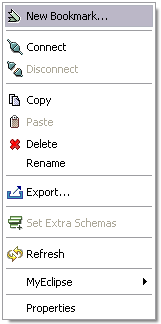
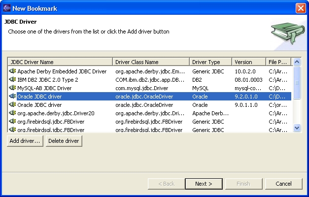

Creating a QuantumDB Bookmark
Important Note: All bookmarks in Quantum are created
with the Auto-Commit option enabled, so all your modifications to the data in
the database will be automatically committed. If that's not your intent, check
the Bookmark Properties
for info to change this option.
To connect to a database (create a bookmark in quantum) you use the New Bookmark menu item that appears
when right-clicking on the blank space in the Database Bookmarks view.

Once this menu item is selected, you will see the "New Bookmark" wizard:

Creating Bookmarks involve four things:
- specify a JDBC Driver;
- provide the connection details (userid, password and JDBC URL);
- choose a name for your bookmark; and
- optionally, specify which schemas you want to view.